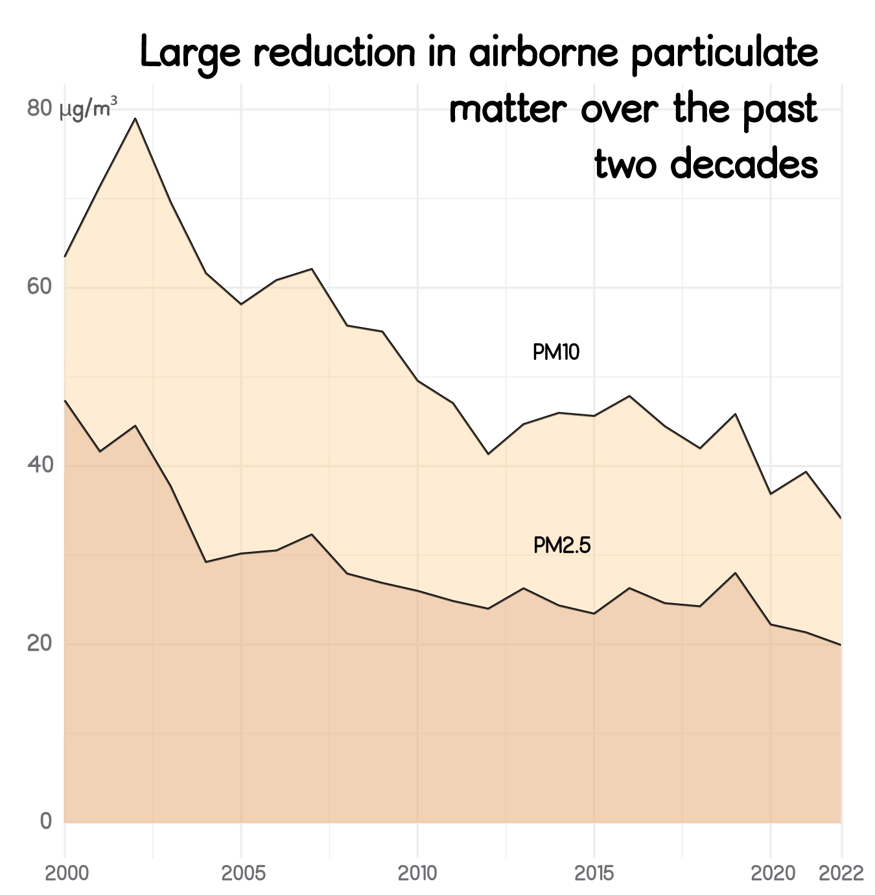
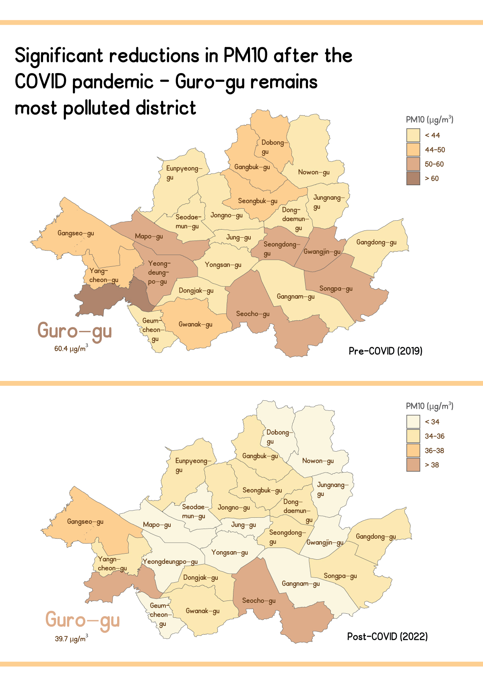
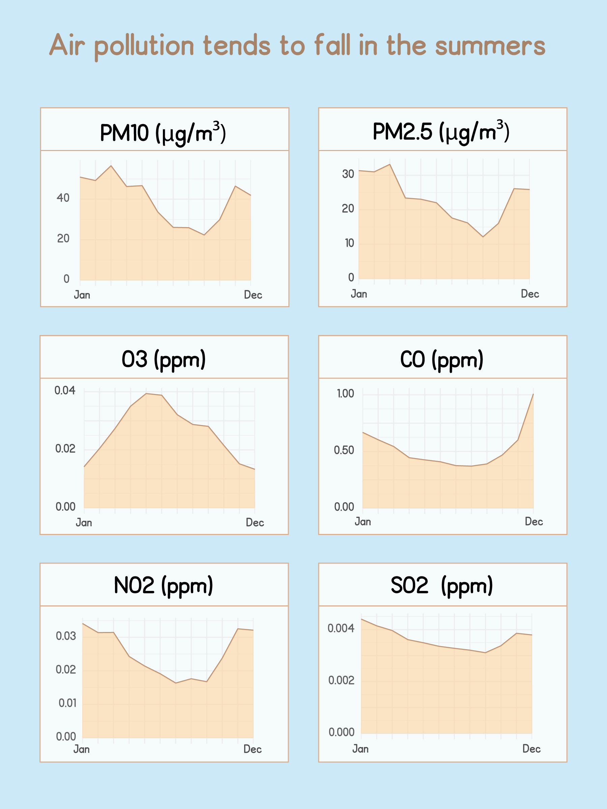

By Hamzah Chamdia
South Korea - an ''Asian Tiger'' country hailed as a shining example of the power of hard work and democracy. The once impoverished nation has now attained both wealth and global relevance, with its export-based economy encompassing everything from Samsung electronics to K-pop. Of course, the question of development is a complex one, and there is arguably a price to be paid when nations industrialize. In South Korea's case, rapid industrialization centered around its capital city of Seoul, combined with the ongoing industrialization of neighboring China, has created a long-standing air quality problem in the city. Fortunately, the government has been aware of this problem for some time. It has recorded and publicized hourly air pollution data from each district in Seoul since 1988, and has taken steps to actively improve the situation.
Air quality has numerous measures. PM10 and PM2.5 refer to the presence of airborne particulate matter less than 10 and 2.5 microns in diameter. Such particles are known to have adverse effects on our health, with PM2.5 being a subset of PM10 that is thought to be particularly dangerous. According to WHO guidelines, PM10 levels should not exceed an average of 15 units/day, a limit that is far below the current levels in Seoul. As the chart above shows, however, air quality has markedly improved in the past two decades, likely due to new government policies/initiatives to address it.
When looking at the data, I also noticed much of the improvement in air quality has happened over the past few years. This may be in part due to the COVID pandemic and associated reductions in the use of cars and public transport. I decided to break it up by district, and found that the most polluted one is Guro-gu. Even that district, however, has experienced marked improvement since 2019. The data I have only goes up to 2022, so it would be interesting to see if there was potentially a slight increase in the past year.
I was also interested in whether air pollution changes seasonally. This time, I looked at additional markers of air pollution. I found that, with the exception of zone, all indicators tend to reach a low in the summer. This may be because people are consuming less energy during the summer, as there is no need for heating. Sunlight does facilitate the production of ozone, however, which explains why it doesn't follow the trend.
The air quality data was obtained from a South Korean government webiste (see here, here and here ). In order to generate the cartograms, I used shape files from this github repository. All work was done in RStudio and Adobe Illustrator.
Further reading (sources):